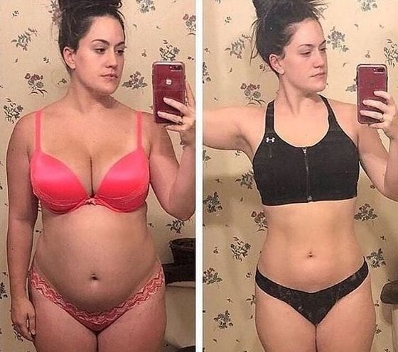
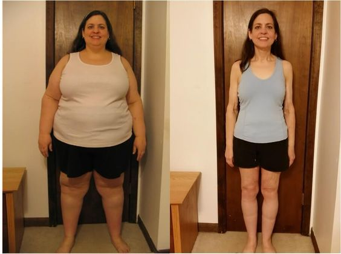
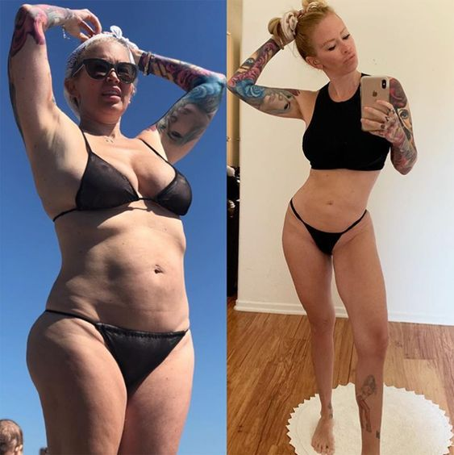
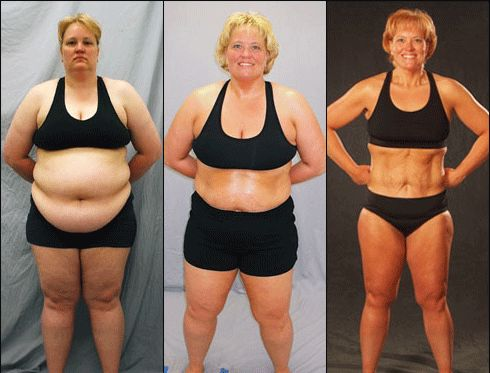
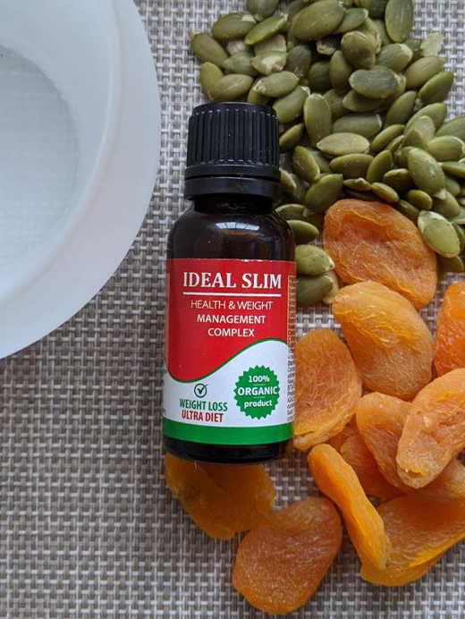

IL GRASSO NON PROVIENE DAL CIBO! PUOI ELIMINARE FINO A 15 KG DI GRASSO SENZA CHIMICA, FAME E SFORZO FISICO.
Ne parla il medico della più alta categoria medica Fabrizio Gervasoni
Diete, esercizio fisico, pillole e liposuzione sono oggi i modi principali per combattere l`aumento di peso. Tuttavia, a giudicare dal fatto che il numero di persone obese continua a crescere, nessuna di esse è veramente efficace.
La situazione è cambiata quando è apparso in Italia Ideal Slim
- un rimedio che stimola la perdita di peso naturale.
Il medico Fabrizio Gervasoni
Direttore del Centro medico scientifico nazionale, dottore in scienze mediche, lavoratore onorario in Italia, medico generico, nutrizionista.
Esperienza lavorativa - 42 anni
Che cosa è Ideal Slim?
Se il tuo corpo è carente di vitamina A, mangia le arance; se ti manca fosforo, mangia pesce; se la vitamina C, mangia il ribes nero. Solo le gocce Ideal Slim contengono tutti gli oligoelementi necessari che contribuiscono alla combustione dei grassi nel corpo umano. In particolare, questo strumento è super antiossidante che brucia i grassi e normalizza l`attività di tutto il corpo.
Ideal Slim: concentrato vegetale. 25 gocce - una porzione del farmaco contiene la quantità necessaria di sostanze attive, che aumentano il tasso di combustione dei grassi 10 volte di più! È stato clinicamente dimostrato che Ideal Slim accelera il metabolismo, ripristina l`attività del sistema endocrino, stimola la rigenerazione dei tessuti e sopprime la fame. Il prodotto è completamente naturale ed è uno stimolatore attivo dei processi naturali nel corpo umano. Poiché la combustione dei grassi si verifica a causa del rapido metabolismo, non è necessaria una dieta. Per mantenere il corretto metabolismo, una dieta equilibrata + gocce Ideal Slim due volte al giorno è sufficiente. Anche in questo caso non è necessaria un`intensa attività fisica. Se lo desideri, puoi eseguire qualsiasi semplice esercizio per aumentare il tono muscolare.
Proprietà principali di Ideal Slim:
Brucia grassi
Soppressione dell`appetito
Normalizzazione dello sfondo ormonale
Ringiovanimento e pulizia del corpo
Effetto tonico attraverso la perdità del peso
Grazie a Ideal Slim, il metabolismo è notevolmente accelerato e quindi il grasso sottocutaneo nelle aree problematiche brucia a una velocità di 700 grammi al giorno! Ideal Slim è efficace anche nei casi in cui le fluttuazioni ormonali sono da incolpare per l`eccesso di peso. Se sei propenso ad essere in sovrappeso, questo prodotto fa decisamente al caso tuo!
In Italia questo prodotto è apparso relativamente di recente, ma è già riuscito a affermarsi come un farmaco preferito per i bodybuilder e gli atleti che hanno bisogno di dimagrire veloce e mantenere una bassa percentuale di grassi nel corpo.
Risultato dopo 27 giorni di assunzione di Ideal Slim

Risultato dopo 30 giorni di assunzione di Ideal Slim
Risultato dopo 45 giorni di assunzione di Ideal Slim

Risultato dopo 33 giorni di assunzione di Ideal Slim
Commenti dei ricercatori:

Prof. Salvatore Ripa Endocrinologo
nutrizionista-endocrinologo
Esperienza lavorativa - 27 anni
La cosa più importante per perdere peso è non aggravare le condizioni del corpo. Sfortunatamente, i modi più popolari per perdere peso non possono vantarsene. È molto difficile seguire costantemente una dieta, non tutti possono sopportare un`astinenza alimentare prolungata. Non avendo raggiunto l`obiettivo, le persone tornano nuovamente a prendere pillole o altri farmaci per perdere peso, la maggior parte dei quali causa gravi danni al corpo, disturbi dell`equilibrio ormonale, funzionalità epatica e soppressione dell`immunità. La perdita di peso dovrebbe essere naturale e non influenzare i processi interni del corpo. oggi Ideal Slim - è l`unico farmaco che affronta con successo questi compiti senza danni alla salute. I microelementi attivi contenuti nel Ideal Slim causano l`accelerazione del metabolismo e stimolano un`intensa combustione dei grassi. La loro concentrazione in una singola dose di Ideal Slim (25 gocce) migliora questi processi di almeno 10 volte. Sono convinto che questo prodotto sia uno dei migliori strumenti nella nutrizione moderna. È anche un prodotto sicuro e affidabile di cui ti puoi fidare completamente.
Emanuela Setola
nutrizionista-endocrinologo
Esperienza lavorativa - 18 anni
Le donne vengono spesso da me in lacrime. Provano di tutto, ma nulla funziona o il peso è torna molto rapidamente. Li consigliavo di non farsi prendere dal panico e riprovare. Oggi esiste una soluzione migliore a questo problema: Ideal Slim. Perdere peso non è mai stato così facile. Queste gocce devono essere assunte quotidianamente senza timore per la salute. Grazie a Ideal Slim, brucerai fino a 5 kg a settimana in modo completamente naturale. Questo è un prodotto completamente naturale adatto a tutti, indipendentemente dal sesso, dall`età e dal peso in eccesso. La perdita di peso si ottiene solo bruciando i grassi, non disidratando il corpo. Ideal Slim ha da tempo guadagnato popolarità nel cibo occidentale e ora sta guadagnando sempre più popolarità in Italia. Personalmente, raccomando questo farmaco a tutti i miei pazienti e ogni volta sento la loro gratitudine per il nuovo corpo.
Ricerca
Risultati dei test di laboratorio Ideal Slim nell`associazione di alimentazione sana:
Un gruppo di soggetti in sovrappeso (100 persone) ha assunto Ideal Slim due volte al giorno, mattina e sera, prima dei pasti. Il test è durato un mese. In questo caso, nessuno dei volontari non ha cambiato la propria alimentazione abituale. Durante lo studio, sono stati ottenuti i seguenti risultati:
1. Perdita di massa grassa da 12 a 15 kg.
- per sbarazzarsi di 15 kg - 95%
- per sbarazzarsi di 12 kg - 100%
* La perdita in questo caso significa eliminare la massa grassa e la sua assenza per 1 mese.
2. Notevole miglioramento del metabolismo.
3. Aumento del tono e dell`attività fisica.
4. Migliorare la funzione del fegato e il sistema endocrino.
Ideal Slim ha dimostrato di avere un potente effetto sull`accelerazione del metabolismo e sulla combustione dei grassi. Le gocce sono raccomandate per l`assunzione di persone in sovrappeso, così come coloro che hanno un metabolismo compromesso.
Ciao, ho provato a bere Ideal Slim e ho perso solo 4 kg in un mese =((
Sabrina Carbone significa che non hai letto bene la sezione `metodo di utilizzo`. Si prega di rileggere attentamente di nuovo e iniziare a bere il farmaco rigorosamente secondo le istruzioni!
Cordiali Saluti
Non ho ottenuto lo sconto del 50%, cosa devo fare? Posso riprovare?
Non lo so, sembra impossibile, ma io ho ricevuto il mio sconto del 50% ))
Prendo Ideal Slim da poco e ho mangio tutto quello che mi piace. Ho perso 14 kg. Penso che Ideal Slim per la perdita di peso sia la migliore soluzione che abbia mai provato! E la cosa più bella è che non hai bisogno di allenarti in palestra per portare il tuo corpo in ottima forma. Non ho tempo e desiderio per questo ... In breve, queste gocce sono solo una manna dal cielo per quelli pigri come me! Lo consiglio! Ecco i miei risultati:


Prima di iniziare a bere Ideal Slim, pesavo 90 kg. Nella mia giovinezza, ho avuto una figura atletica meravigliosa e con l`età, il grasso è apparso sulla pancia e sui fianchi. A 35 anni, mi sono reso conto che avevo urgente bisogno di mettermi in ordine! Per quasi un anno mi sono allenato intensamente, ma non sono riuscito a raggiungere la forma desiderata. Poi ho incluso Ideal Slim nella mia dieta quotidiana e in poche settimane ho riacquistato la mia figura con quale faccio impazzire tutte le donne! Sebbene queste gocce abbiano un effetto cumulativo e stabilizzino il peso per lungo tempo, ho ancora un paio di botiglette Ideal Slim in riserva))

Non so chi come, ma a me Ideal Slim molto utile. Sono felice e orgogliosa del mio risultato - meno 16 kg in 4,5 settimane. Perdita di peso rapida!

Forse devi solo mangiare di meno? Capisco un organismo in crescita come hai bambini, loro si che hanno bisogno di molti nutrienti. Ma tu sei un adulto - non riesci a controllarti ?!
Ceremia Barone a meno che tu non sapessi che ci sono persone che hanno una propensione alla pienezza geneticamente predisposta, e nessuna dieta e farmaci lo salvano. Se non sei incline alla pienezza, sei fortunato, ma ti assicuro che non tutte sono fortunate come te.
Cordiali Saluti
Il dottore ha ragione! Non mangio quasi nulla, ma non aiuta. Il peso si è congelato e non diminuisce

Sono sorpresa che molte persone pensino che solo i nutrizionisti siano a conoscenza di questo farmaco. Queste gocce mi hanno aiutato a perdere 14 kg sei mesi fa. E ora voglio ripetere questo corso solo per la prevenzione, beh, in modo da potermi ricaricare un po `con le vitamine. Questo è un concentrato di piante naturale e sicuro. E anche i miei amici conoscono queste gocce da molto tempo, quindi questo non è un segreto. FOTO PRIMA E DOPO


Perché guidare tutti allo stesso standard? Perché tutti dovrebbero essere magri? Ad esempio io peso 79 kg con un`altezza di 167 e non me ne vergogno. Mi adoro e mi sento benissimo!
Amanda Pagano la moda del 21 ° secolo fa andare le ragazze agli estremi e sembrare modelli. Spesso influisce negativamente sulla loro salute. Per questo abbiamo creato Ideal Slim - questo farmaco che brucia i grassi intensamente, riduce il peso, ma non è affatto dannoso per la salute, ma solo migliora grazie ai componenti e vitamine nella sua composizione
Cordiali Saluti
La ruota del`estrazione si può girare solo una volta? Non ho avuto fortuna e non ho vinto lo sconto...(Posso ripetere?

RAGAZZE! HO URGENTE BISOGNO DI PERDERE 9 KG!!!!!!!!!! STO A CASA DA SEI MESI E NON HO NOTATO COME HO PRESO PESO , COSA DEVO FARE?? AIUTO!! NON POSSO FARE DIETA NON HO FORZA DI VOLONTÀ, POI MANGIO ANCORA DI PIÙ. ANCHE LA PALESTRA NON È PER ME, SONO TROPPO PIGRA...
Susana Mancini la pigrizia non è la migliore qualità dell`uomo, ma per fortuna sei fortunato! Ideal Slim è esattamente ciò di cui hai bisogno.
Cordiali Saluti
Sito ufficiale del produttore - è l`unico posto dove puoi comprare le gocce originali di Ideal Slim? O possono essere acquistati in qualsiasi negozio online?
purtroppo si. Perché le farmacie commerciali fanno un enorme margine sulle cadute e il loro costo aumenta più volte contemporaneamente. Inoltre, la frode è diffusa su Internet e, se acquisti un falso, rischi la tua salute. Sul sito Web ufficiale del produttore, puoi acquistare il prodotto Ideal Slim originale e sicuro al prezzo più conveniente, a volte anche con uno sconto, se sei fortunato.
Cordiali Saluti
Anche mia moglie non può perdere peso. Lo sposato quando aveva 53 kg, ora ne pesa 68. La cosa peggiore è che è contenta di tutto. Giustamente scrivete che ti abitui molto rapidamente all`eccesso di peso ((
si, ma se non ti va bene, ordina le gocce Ideal Slim per lei. Dagli una sorpresa - non devi nemmeno dire nulla, basta versarlo nel tè o nell`acqua - queste gocce funzionano perfettamente come integratore alimentare! Perderà peso così rapidamente che si chiedera come sia successo. Sarà bello per lei e per te! Buona fortuna
Cordiali Saluti
Gabriella Favaro il mio consiglio è di provare Ideal Slim e vedrai quanto è efficace! Se hai un po `di sovrappeso, un corso sarà sufficiente!
Cordiali Saluti
PESO 97 KG. COME RIMUOVERLI NON LO SO. NON VOGLIO PASSARE OLTRE 100. COSA DEVO FARE????? AIUTO !!!!!!! Ideal Slim SI PUÒ TROVARE IN FARMACIA ??????
Daniela non credo! Soprattutto lo sconto è valido solo per l`ordine sul sito Ed ecco il prodotto originale))
è importante non farsi prendere dal panico, tutto è deciso. Cominciamo gradualmente. In primo luogo, purtroppo, queste gocce non possono essere trovate in una farmacia commerciale. Ho già spiegato il perché. In secondo luogo, ordina Ideal Slim e segui le istruzioni. E ci riuscirai.
Cordiali Saluti
Salve! Sono una madre di due figli e per quanto posso ricordare, cerco sempre di perdere peso. Non riesco a seguire una dieta, per più di un paio di giorni, poi mi rompo e mangio ancora di più. Non ho assolutamente tempo per lo sport. Ho letto questo articolo e non vedo l`ora di iniziare a bere Ideal Slim. Non è del tutto chiaro come prenderli - solo in forma pura o può essere aggiunto al succo? Tutto è scritto in dettaglio nelle istruzioni? Nessuna dipendenza? Se puoi, rispondi alle mie domande o dimmi dove posso leggere al riguardo. Le sarei molto grata.
Saluti! Ho 50 anni e volevo davvero perdere peso. A questa età, è difficile perdere peso, perché il metabolismo rallenta ... Così ho ordinato il corso Ideal Slim per me e ho buttato via 19 kg! L`effetto mi ha colpita! Fino a 19 kg in un mese e mezzo !! Non mi aspettavo tali risultati, e quindi sono doppiamente felice. Grazie per l`articolo Consiglio Ideal Slim a tutti.

Fantastico, anche io ho scoperto per caso di Ideal Slim. Non speravo più di perdere peso e ho quasi fatto i conti con il fatto che sarei sempre rimasta grassa. Ma quando ho iniziato a prendere le gocce , non credevo che e il mio corpo! Ho perso 17 kg! E questo è solo l`inizio, penso che dopo un po `ripeterò di nuovo il corso. Queste gocce sono naturali, il che significa che non nessun danno. Mi sento persino molto meglio. La parte migliore è che non è necessario cambiare stile di vita e dieta. Continui a vivere come prima e perdi peso con Ideal Slim. Non so che tipo di persona abbia inventato questo farmaco, ma molte grazie a lui.

Questa è una sensazione irreale quando volevi davvero qualcosa, ma pensavi che fosse quasi impossibile. E un tale miracolo. Ho già perso 10 chilogrammi e continuo allo stesso ritmo. Gli amici pensano che io sia a dieta rigorosa, si preoccupano per me. Ma finora ho deciso che non avrebbero dovuto dire nulla su Ideal Slim, lascio che ci sia una sorpresa)))))
Maria non ringraziate! È un grande onore per noi aiutare le persone perché siamo medici e ci prendiamo cura della salute di tutti.
Cordiali Saluti

Dimmi dove lo hai comprato? Questo prodotto non si in vendita. Vorrei comprare l`originale, non un falso. E poi non ci saranno risultati e, inoltre, è pericoloso per la salute.
Ancora una volta ripeto che Ideal Slim può essere ordinato solo sul sito ufficiale del produttore.E oggi hai una grande opportunità di ordinare queste gocce a metà prezzo della promozione con uno sconto del 50%. Non perdere l`occasione! Per non commettere errori e andare immediatamente al sito Web ufficiale, fai clic sul pulsante sotto `Vai al sito Web del produttore`! Una promozione unica è valida specificamente per i nostri lettori previo accordo con il produttore. Ma non durerà a lungo, quindi affrettati con l`ordine!
E per favore attenzione ai falsi.
Cordiali Saluti
Ideal Slim, una comoda bottiglietta: la porto sempre con me, le gocce hanno un gusto molto piacevole. Ho appena iniziato a berle, ma sento già che hanno iniziato a funzionare.
